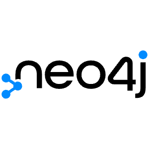

¿Qué son las Bases de Datos?
En el mundo de la tecnología y el desarrollo de software, las bases de datos juegan un papel fundamental. Son sistemas organizados para almacenar, gestionar y recuperar información de manera eficiente. Imagina una biblioteca gigante donde cada libro (dato) está catalogado y puedes encontrarlo rápidamente cuando lo necesitas.
Importancia de las Bases de Datos
Las bases de datos son cruciales para una amplia variedad de aplicaciones, desde sitios web y aplicaciones móviles hasta sistemas de gestión empresarial. Permiten:
- Almacenar grandes volúmenes de datos: De forma estructurada y organizada.
- Acceder a la información rápidamente: Mediante consultas y búsquedas eficientes.
- Mantener la integridad de los datos: Asegurando la consistencia y precisión de la información.
- Compartir información: Permitiendo que múltiples usuarios y aplicaciones accedan a los mismos datos de forma controlada.
- Analizar datos: Facilitando la extracción de información valiosa para la toma de decisiones.
Tipos Principales: SQL y NoSQL
Generalmente, las bases de datos se dividen en dos categorías principales:
- Bases de Datos SQL (Relacionales): Estas bases de datos utilizan un esquema fijo y estructurado, donde los datos se organizan en tablas con filas y columnas. El lenguaje estándar para interactuar con ellas es SQL (Structured Query Language). Ejemplos populares incluyen MySQL, PostgreSQL y SQLite.
- Bases de Datos NoSQL (No Relacionales): Estas bases de datos ofrecen más flexibilidad en el esquema y son ideales para manejar datos no estructurados o semi-estructurados. Existen diferentes tipos de bases de datos NoSQL, como las orientadas a documentos (MongoDB), clave-valor (Redis), de grafos (Neo4j) y de columnas (Cassandra).
A continuación, exploraremos algunos ejemplos específicos de bases de datos SQL y NoSQL.
Bases de Datos SQL

MySQL
Popular sistema de gestión de bases de datos relacional, de código abierto y ampliamente utilizado en aplicaciones web.

PostgreSQL
Potente base de datos relacional de código abierto, conocida por su extensibilidad y cumplimiento de estándares.

SQLite
Base de datos relacional ligera y autónoma, ideal para aplicaciones locales o embebidas.

SQL Server
Sistema de gestión de bases de datos relacional desarrollado por Microsoft, robusto y con muchas funcionalidades.
Bases de Datos NoSQL

MongoDB
Base de datos NoSQL orientada a documentos, flexible y escalable para datos no estructurados.

Cassandra
Base de datos NoSQL distribuida y altamente escalable, diseñada para alta disponibilidad y rendimiento.

DynamoDB
Servicio de base de datos NoSQL clave-valor totalmente gestionado y escalable de Amazon Web Services.
Neo4j
Base de datos NoSQL de grafos, optimizada para almacenar y consultar relaciones entre datos.